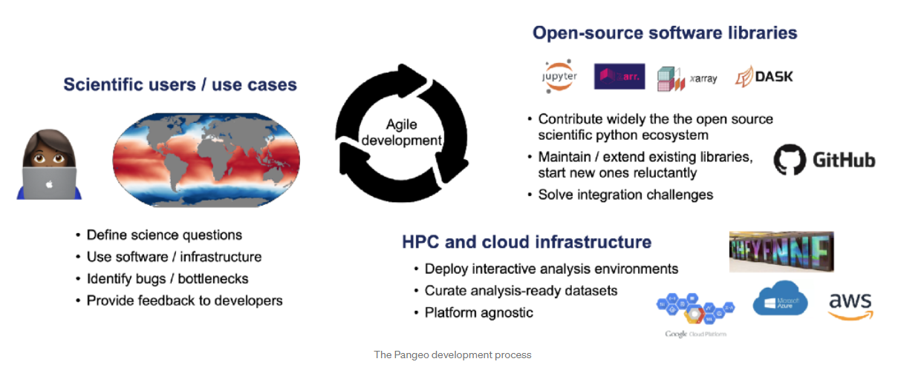
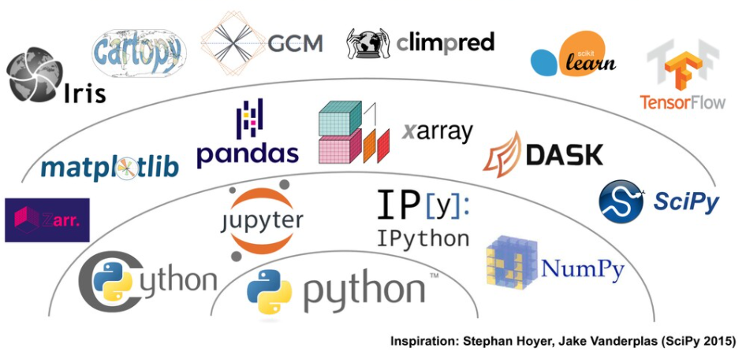

Pangeo ecosystem 101 for everyone
Contributors
Questions
What are Pangeo and its ecosystem?
Why Pangeo?
What is the Pangeo Software Ecosystem?
How can I use Pangeo in Galaxy?
How to cite and support Pangeo?
Objectives
Understand Pangeo, its community and software ecosystem
Learn how to use Pangeo within Galaxy.
Learn to cite and support Pangeo.
Pangeo in a nutshell
A Community platform for Big Data geoscience
- Open Community
- Open Source Software
- Open Source Infrastructure
Funders


Speaker Notes
- Pangeo is first and foremost a community promoting open, reproducible, and scalable science.
- This community provides documentation, develops and maintains Open Source software, and deploys computing infrastructure to make scientific research and programming easier.
- Pangeo is funded through many different projects in USA, Europe and Australia but the main funders are NSF, EarthCube, NASA and the Gordon and Betty Moore foundation.
Motivations
There are several building crises facing the geoscience community:
.left[- Big Data: datasets are growing too rapidly and legacy software tools for scientific analysis can’t handle them. This is a major obstacle to scientific progress.] .left[- Technology Gap: a growing gap between the technological sophistication of industry solutions (high) and scientific software (low).] .left[- Reproducibility: a fragmentation of software tools and environments renders most geoscience research effectively unreproducible and prone to failure.]
Speaker Notes
- The Pangeo Project has been motivated by several building crises faced by the geoscience community: Big data, Technology gap and Reproducibility crisis.
- Indeed, datasets are are growing too rapidly and legacy software tools for scientific analysis can’t handle them. This is a major obstacle to scientific progress.
- Another obstacle concerns the growing gap between the technological sophistication of industry solutions (high) and scientific software (low).
- Finally, the fragmentation of software tools and environments renders most geoscience research effectively unreproducible and prone to failure.
Goals
Pangeo aims to address these challenges through a unified, collaborative effort.
The mission of Pangeo is to cultivate an ecosystem in which the next generation of open-source analysis tools for ocean, atmosphere and climate science can be developed, distributed, and sustained. These tools must be scalable in order to meet the current and future challenges of big data, and these solutions should leverage the existing expertise outside of the geoscience community.
Speaker Notes
- Pangeo aims to address these challenges through a unified, collaborative effort.
- The mission of Pangeo is to favor the development of open-source analysis tools for ocean, atmosphere and climate science.
- These tools must be scalable in order to meet the current and future challenges of big data.
- These solutions should leverage the existing expertise outside of the geoscience community.
The Pangeo Approach

Source: Pangeo 2.0 by Ryan Abernathey, December 22, 2020.
Speaker Notes
- To address the issues mentioned earlier, an agile development methodology needs to be adopted.
- Challenges related to scientific use cases as well as Open-Source software libraries, HPC and cloud infrastructure need for answering these scientific questions cannot be tackled separately.
- For example, scientific users are most often identifying bugs/bottlenecks.
- Then they can “immediately” report them to developers.
- And help developers to define priorities for future releases.
- Scientific users and developers also provide relevant inputs to HPC and cloud infrastructure providers on the current trend in the community.
The Pangeo Software ecosystem

Source: Pangeo Tutorial - Ocean Sciences 2020 by Ryan Abernathey, February 17, 2020.
Speaker Notes
- The Pangeo software ecosystem involves open source tools such as X-array, iris, dask, jupyter, and many other packages.
- There is no single software package called Pangeo.
- The Pangeo project serves as a coordination point between scientists, software, and computing infrastructure.
- On this figure, the python packages are “layered” based on their dependencies.
- At the “bottom”, we have the Python programming language itself.
- On the second layer, we can find NumPy or Jupyter Notebooks that are very common Python packages and that you may know already.
- X-array makes an intensive use of Numpy for its underlying data structures.
- Iris has what we call a “high-level” user interface with many functions for analysing and visualising Earth Science data.
Pangeo Galaxy Tools
A growing number of tools available to non Python programmers
.left[Xarray Galaxy tools:
- Manipulate netCDF with Zarr e.g. Cloud Optimized Data available soon;
- Visualize geographical (CF-Convention) netCDF on a map;
- “Convert” to tabular data to increase interoperability with other Galaxy Tools;
- Graphical User Interface: learn about the concepts without being hindered by Python programming.]
Our objective is to bridge the gap between disciplines and add tools on demand to help cross-disciplinary research
Speaker Notes
- If you are not familiar with Python or any other programming languages, you may wonder whether there are “Pangeo tools” with a graphical user interface.
- We have indeed wrapped a number of tools using Python packages from the Pangeo software stack.
- For instance, Galaxy tools using X-array are available in Galaxy.
- Even if you are a Python programmer but for instance not very familiar with Earth Science data, learning X-array concepts from Galaxy Tools can be useful.
- The main objective is to bridge the gap between disciplines and add tools on demand to help cross-disciplinary research.
How to cite and support Pangeo
- Cite Pangeo when using Xarray Galaxy Tools:
- Report issues, wishes and thank the Pangeo Community whenever you use tools from the Pangeo software stack!
Speaker Notes
- Like any Open Source community, it is important to acknowledge the community effort to provide open and easy to use Python packages and the associated Galaxy Tools.
- We encourage you to cite Abernathey et al. 2017, Abernathey et al. 2021, Gentemann et al. 2021 and Sambasivan et al. 2021 in your pangeo-dev-process when using Xarray Galaxy Tools.
- As mentioned earlier, user feedback is important for improving open source tools and packages. Report issues, wishes and thank the Pangeo Community whenever you use tools from the Pangeo software stack!
Learn more
- Web: https://pangeo.io
- Discourse: https://discourse.pangeo.io/
- Github: https://github.com/pangeo-data
- Twitter: @pangeo_data
Speaker Notes
- If you want to learn more about Pangeo, visit the Pangeo website pangeo.io, or github reposity github.com/pangeo-data.
- Get help on discourse at discourse.pangeo.io and follow Pangeo on Twitter @pangeo_data.
Key Points
- Pangeo is an inclusive community promoting open, reproducible and scalable science.
Thank you!
This material is the result of a collaborative work. Thanks to the Galaxy Training Network and all the contributors! Tutorial Content is licensed under
Creative Commons Attribution 4.0 International License.
Tutorial Content is licensed under
Creative Commons Attribution 4.0 International License.
References
- Abernathey, R., kevin paul, joe hamman, matthew rocklin, chiara lepore et al., 2017 Pangeo NSF Earthcube Proposal. 10.6084/m9.figshare.5361094.v1 https://figshare.com/articles/Pangeo_NSF_Earthcube_Proposal/5361094
- Abernathey, R. P., T. Augspurger, A. Banihirwe, C. C. Blackmon-Luca, T. J. Crone et al., 2021 Cloud-Native Repositories for Big Scientific Data. Computing in Science & Engineering 23: 26–35. 10.1109/mcse.2021.3059437
- Gentemann, C. L., C. Holdgraf, R. Abernathey, D. Crichton, J. Colliander et al., 2021 Science Storms the Cloud. 10.1002/essoar.10506344.2
- Sambasivan, N., S. Kapania, H. Highfill, D. Akrong, P. Paritosh et al., 2021 “Everyone wants to do the model work, not the data work”: Data Cascades in High-Stakes AI, in Proceedings of the 2021 CHI Conference on Human Factors in Computing Systems, ACM. 10.1145/3411764.3445518